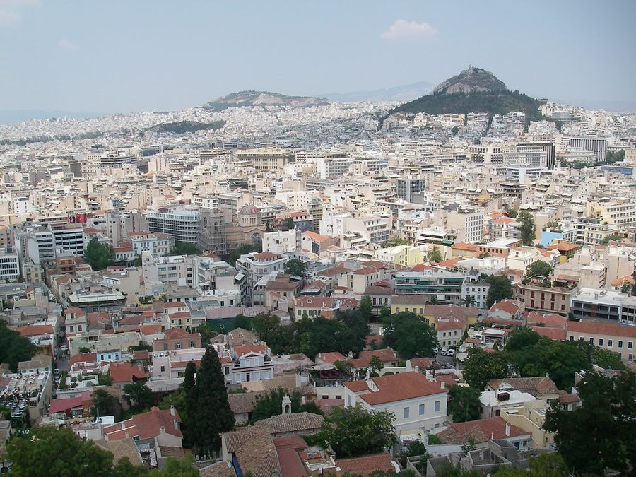

チャンピオンズリーグ：リバプール相手にクラブ・ブルッヘには壁が高すぎた、マンUではラメンスに過失、リールがバイエルン相手に番狂わせを演じるLigue des champions : la marche était trop haute pour le Club Bruges face à Liverpool, Lammens fautif avec ManU, Lille crée l’exploit face au Bayernブラウ・アンド・ズワルトはレッズ相手に番狂わせを成し遂げられなかった。…
チャンピオンズリーグ：リバプール相手にクラブ・ブルッヘには壁が高すぎた、マンUではラメンスに過失、リールがバイエルン相手に番狂わせを演じるLigue des champions : la marche était trop haute pour le Club Bruges face à Liverpool, Lammens fautif avec ManU, Lille crée l’exploit face au Bayernブラウ・アンド・ズワルトはレッズ相手に番狂わせを成し遂げられなかった。… デュラン・デュランが悲しみに：元ギタリストのアンディ・テイラー、がんのため65歳で死去Duran Duran en deuil: Andy Taylor, ancien guitariste du groupe, est mort à 65 ans des suites d’un cancer英国のミュージシャンは11月23日月曜日、自宅で家族に囲まれて亡くなった。65歳だった。…
デュラン・デュランが悲しみに：元ギタリストのアンディ・テイラー、がんのため65歳で死去Duran Duran en deuil: Andy Taylor, ancien guitariste du groupe, est mort à 65 ans des suites d’un cancer英国のミュージシャンは11月23日月曜日、自宅で家族に囲まれて亡くなった。65歳だった。… 「QR ル・デバ」：解決不能な危機か？ ライブを振り返る"QR le débat" : Une crise insoluble ? Revivez notre directバルト・デ・ウェーフェル首相は月曜日、再び国王のもとを訪れた。再び、交渉は…
「QR ル・デバ」：解決不能な危機か？ ライブを振り返る"QR le débat" : Une crise insoluble ? Revivez notre directバルト・デ・ウェーフェル首相は月曜日、再び国王のもとを訪れた。再び、交渉は… エジプト：カイロ近郊の庶民地区でタンクローリーが横転し炎上、少なくとも30人死亡Égypte : un camion-citerne se renverse et embrase un quartier populaire près du Caire, au moins 30 mortsAFPが認証した映像には、現場から大きな火と厚い煙が立ち上る様子が映っている…
エジプト：カイロ近郊の庶民地区でタンクローリーが横転し炎上、少なくとも30人死亡Égypte : un camion-citerne se renverse et embrase un quartier populaire près du Caire, au moins 30 mortsAFPが認証した映像には、現場から大きな火と厚い煙が立ち上る様子が映っている… ルカクの弁護士が真相を語る：「ロメルーの周りにはネガティブなエネルギーがたくさんあった」L’avocat de Lukaku livre sa version des faits: "Il y avait beaucoup d’énergie négative autour de Romelu"ロメル・ルカクの代表引退の突然の発表を受け、弁護士のセバスチャン・ルドゥールがこの決断の理由について振り返る。…
ルカクの弁護士が真相を語る：「ロメルーの周りにはネガティブなエネルギーがたくさんあった」L’avocat de Lukaku livre sa version des faits: "Il y avait beaucoup d’énergie négative autour de Romelu"ロメル・ルカクの代表引退の突然の発表を受け、弁護士のセバスチャン・ルドゥールがこの決断の理由について振り返る。… カルロス・アルカラス、ヤニック・シナーへの思いを語る：「彼がいなくて寂しい、テニスには彼が必要だ」Carlos Alcaraz déclare sa flamme à Jannik Sinner : "Il me manque, le tennis a besoin de lui"スペイン代表としてデビスカップに出場するためボローニャに滞在中のムルシア出身のアルカラスは、最大のライバルの長期不在について質問を受けた。……
カルロス・アルカラス、ヤニック・シナーへの思いを語る：「彼がいなくて寂しい、テニスには彼が必要だ」Carlos Alcaraz déclare sa flamme à Jannik Sinner : "Il me manque, le tennis a besoin de lui"スペイン代表としてデビスカップに出場するためボローニャに滞在中のムルシア出身のアルカラスは、最大のライバルの長期不在について質問を受けた。…… ブリュッセルのマロール幼稚園の閉鎖発表に反対する動きMobilisation contre la fermeture annoncée de l'école maternelle de la Marolle à Bruxellesブリュッセルのマロール幼稚園の保護者たちが、新学期からの閉園発表に反対して動き出している。
ブリュッセルのマロール幼稚園の閉鎖発表に反対する動きMobilisation contre la fermeture annoncée de l'école maternelle de la Marolle à Bruxellesブリュッセルのマロール幼稚園の保護者たちが、新学期からの閉園発表に反対して動き出している。 子どもの権利は、すべての人にとって現実ではないLes droits de l'enfant ne sont pas une réalité pour tous子どもの権利に関する国際条約は、196か国が署名した非常に重要な文書である。条約は54の…
子どもの権利は、すべての人にとって現実ではないLes droits de l'enfant ne sont pas une réalité pour tous子どもの権利に関する国際条約は、196か国が署名した非常に重要な文書である。条約は54の… 女子ユーロカップ：カストール・ブレーヌが接戦の末に勝利、ビリー・マッセイは無敗を続けるEuroCoupe féminine: les Castors Braine s'imposent au bout du suspense, Billie Massey poursuit son sans-fauteカストール・ブレーヌは、女子バスケットボールのFIBAユーロカップ予選争いで重要な勝利を収めた。接戦となった試合の末に…
女子ユーロカップ：カストール・ブレーヌが接戦の末に勝利、ビリー・マッセイは無敗を続けるEuroCoupe féminine: les Castors Braine s'imposent au bout du suspense, Billie Massey poursuit son sans-fauteカストール・ブレーヌは、女子バスケットボールのFIBAユーロカップ予選争いで重要な勝利を収めた。接戦となった試合の末に… 道路では注意を：ブリュッセルとワロニアの大部分が路面凍結でイエローコードPrudence sur les routes: Bruxelles et une bonne partie de la Wallonie en code jaune pour le verglasIRMが警告している。…
道路では注意を：ブリュッセルとワロニアの大部分が路面凍結でイエローコードPrudence sur les routes: Bruxelles et une bonne partie de la Wallonie en code jaune pour le verglasIRMが警告している。… 徒歩パトロール、物乞いへの対応、地籍収入の見直し…シャルルロワが商業活性化のため決めた対策Patrouilles à pied, encadrement de la mendicité, révision du revenu cadastral… : voici les mesures décidées par Charleroi pour redynamiser son commerceゴミ箱のなくなったふたの交換から、複数の通りの地籍収入の見直しまで多岐にわたる…
徒歩パトロール、物乞いへの対応、地籍収入の見直し…シャルルロワが商業活性化のため決めた対策Patrouilles à pied, encadrement de la mendicité, révision du revenu cadastral… : voici les mesures décidées par Charleroi pour redynamiser son commerceゴミ箱のなくなったふたの交換から、複数の通りの地籍収入の見直しまで多岐にわたる… モレンベークの11階建てビルで火災、4人が中毒症状Incendie dans un immeuble de onze étages à Molenbeek : quatre personnes intoxiquées救助隊の出動には夕方の早い時間に複数のチームが動員された。住民は安全確保作業の後、自宅に戻ることができた…
モレンベークの11階建てビルで火災、4人が中毒症状Incendie dans un immeuble de onze étages à Molenbeek : quatre personnes intoxiquées救助隊の出動には夕方の早い時間に複数のチームが動員された。住民は安全確保作業の後、自宅に戻ることができた… モレンベーク＝サン＝ジャンでの火災後、4人が入院Quatre personnes hospitalisées après un incendie à Molenbeek-Saint-Jean水曜日の夜、ドゥ通りにある11階建てのビルでの火災の後、煙で軽く中毒を起こした4人が病院に搬送された…
モレンベーク＝サン＝ジャンでの火災後、4人が入院Quatre personnes hospitalisées après un incendie à Molenbeek-Saint-Jean水曜日の夜、ドゥ通りにある11階建てのビルでの火災の後、煙で軽く中毒を起こした4人が病院に搬送された…
「QR le débat」：解決不能な危機か？ La UneとAuvioでライブをフォロー"QR le débat" : Une crise insoluble ? Suivez notre direct sur La Une et Auvioバルト・デ・ウェーフェル首相は月曜日、再び国王のもとを訪れた。再び、交渉は… ケイトとウィリアムの娘、女優になるため称号を放棄する覚悟、では私たちは？「地位と調和していることが重要」La fille de Kate et William prête à renoncer à ses titres pour être actrice, et chez nous ? “Important que ce soit en phase avec leur statut"女優になる王女、DJになる王子。王室のメンバーたちは、その地位にもかかわらず仕事を探している。…
ケイトとウィリアムの娘、女優になるため称号を放棄する覚悟、では私たちは？「地位と調和していることが重要」La fille de Kate et William prête à renoncer à ses titres pour être actrice, et chez nous ? “Important que ce soit en phase avec leur statut"女優になる王女、DJになる王子。王室のメンバーたちは、その地位にもかかわらず仕事を探している。… 最後のパフォーマンス中のアクシデントにもかかわらず「ダンス・アヴェック・レ・スター」を制覇：動画が話題にIl remporte “Danse avec les stars” malgré un incident sur sa dernière prestation: la vidéo fait le buzzエズラ・フレッチがアメリカで『ダンシング・ウィズ・ザ・スターズ』に優勝した。彼の最後のパフォーマンスはそれ以来、インターネットで広まっている。…
最後のパフォーマンス中のアクシデントにもかかわらず「ダンス・アヴェック・レ・スター」を制覇：動画が話題にIl remporte “Danse avec les stars” malgré un incident sur sa dernière prestation: la vidéo fait le buzzエズラ・フレッチがアメリカで『ダンシング・ウィズ・ザ・スターズ』に優勝した。彼の最後のパフォーマンスはそれ以来、インターネットで広まっている。… パオロ・ファルゾーネとアントニーノ・ファルゾーネは被害者にいくら支払わなければならないのか？モンスで民事裁判が始まるQuels montants Paolo et Antonino Falzone devront-ils verser à leurs victimes ? Le procès au civil s’ouvre à Monsパオロ・ファルゾーネとアントニーノ・ファルゾーネは、司法との関わりがまだ完全には終わっていない。2人はこれから…
パオロ・ファルゾーネとアントニーノ・ファルゾーネは被害者にいくら支払わなければならないのか？モンスで民事裁判が始まるQuels montants Paolo et Antonino Falzone devront-ils verser à leurs victimes ? Le procès au civil s’ouvre à Monsパオロ・ファルゾーネとアントニーノ・ファルゾーネは、司法との関わりがまだ完全には終わっていない。2人はこれから… 「ダンス・アヴェック・レ・スター」のパフォーマンスがSNSで話題に：「物事はシナリオから少し外れてしまった」Une prestation de "Danse avec les stars" fait le tour des réseaux sociaux: "Les choses se sont un peu écartées du scénario"エズラ・フレッチ氏はアメリカで「ダンシング・ウィズ・ザ・スターズ」に優勝した。彼の最新のパフォーマンスはそれ以来、インターネットで話題になっている。…
「ダンス・アヴェック・レ・スター」のパフォーマンスがSNSで話題に：「物事はシナリオから少し外れてしまった」Une prestation de "Danse avec les stars" fait le tour des réseaux sociaux: "Les choses se sont un peu écartées du scénario"エズラ・フレッチ氏はアメリカで「ダンシング・ウィズ・ザ・スターズ」に優勝した。彼の最新のパフォーマンスはそれ以来、インターネットで話題になっている。… なぜドナルド・トランプ氏が大統領選でJ・D・ヴァンス氏にとって今や障害となり得るのかPourquoi Donald Trump pourrait désormais être un obstacle pour J.D. Vance dans la course à la présidence長らく本命とされてきた米副大統領は、もはやホワイトハウスにおけるドナルド・トランプ氏の後継者とは見なされていないという。…
なぜドナルド・トランプ氏が大統領選でJ・D・ヴァンス氏にとって今や障害となり得るのかPourquoi Donald Trump pourrait désormais être un obstacle pour J.D. Vance dans la course à la présidence長らく本命とされてきた米副大統領は、もはやホワイトハウスにおけるドナルド・トランプ氏の後継者とは見なされていないという。… エジプト：カイロ近郊でタンクローリーによる火災、少なくとも30人死亡Égypte : au moins 30 morts dans un incendie provoqué par un camion-citerne près du Caire人的被害はさらに変わる可能性があり、当局は事故の正確な状況を特定しようとしている。…
エジプト：カイロ近郊でタンクローリーによる火災、少なくとも30人死亡Égypte : au moins 30 morts dans un incendie provoqué par un camion-citerne près du Caire人的被害はさらに変わる可能性があり、当局は事故の正確な状況を特定しようとしている。… 壮大なティフォと忘れられない「You'll Never Walk Alone」：ブルッヘ対リヴァプールの大一番を前に熱狂的な雰囲気（写真＋動画）Tifo grandiose et un “You’ll Never Walk Alone” mémorable : ambiance de folie avant le choc Bruges – Liverpool (PHOTOS + VIDEO)水曜夜の注目の試合を前に、観客は熱気に包まれていた。…
壮大なティフォと忘れられない「You'll Never Walk Alone」：ブルッヘ対リヴァプールの大一番を前に熱狂的な雰囲気（写真＋動画）Tifo grandiose et un “You’ll Never Walk Alone” mémorable : ambiance de folie avant le choc Bruges – Liverpool (PHOTOS + VIDEO)水曜夜の注目の試合を前に、観客は熱気に包まれていた。… ウクライナ戦争：トランプの特使がエスカレーションのリスクに警鐘を鳴らし、ウクライナを支援するよりもロシアへの資金提供を多くしたヨーロッパを非難Guerre en Ukraine : l’émissaire de Trump alerte sur le risque d’escalade et dénonce une Europe qui aurait davantage financé la Russie qu’aidé l’Ukraine「深刻に悪化するにはそれほど多くは必要ない」と、ドイツのポッドキャストMD…のインタビューで警告した。
ウクライナ戦争：トランプの特使がエスカレーションのリスクに警鐘を鳴らし、ウクライナを支援するよりもロシアへの資金提供を多くしたヨーロッパを非難Guerre en Ukraine : l’émissaire de Trump alerte sur le risque d’escalade et dénonce une Europe qui aurait davantage financé la Russie qu’aidé l’Ukraine「深刻に悪化するにはそれほど多くは必要ない」と、ドイツのポッドキャストMD…のインタビューで警告した。 滑りやすい道路に注意：ベルギーの複数州が路面凍結で黄色警報Attention aux routes glissantes: plusieurs provinces belges placées en alerte jaune au verglas運転者は、夜間から木曜日の早朝にかけて路面が特に滑りやすくなるおそれがあるため、十分な注意を払う必要がある。
滑りやすい道路に注意：ベルギーの複数州が路面凍結で黄色警報Attention aux routes glissantes: plusieurs provinces belges placées en alerte jaune au verglas運転者は、夜間から木曜日の早朝にかけて路面が特に滑りやすくなるおそれがあるため、十分な注意を払う必要がある。 チャンピオンズリーグ：ヤマル抜きでもFCバルセロナがサバフに快勝Ligue des champions: sans Yamal, le FC Barcelone déroule contre Sabah看板選手ラミン・ヤマルを休ませ、大幅にメンバーを入れ替えた先発で臨みながら、FCバルセロナは水曜日、チャンピオンズリーグのトップ8での位置を固めた…
チャンピオンズリーグ：ヤマル抜きでもFCバルセロナがサバフに快勝Ligue des champions: sans Yamal, le FC Barcelone déroule contre Sabah看板選手ラミン・ヤマルを休ませ、大幅にメンバーを入れ替えた先発で臨みながら、FCバルセロナは水曜日、チャンピオンズリーグのトップ8での位置を固めた… 選挙が怖いのか？いや、選ばれた人たちが怖いのだ！Peur des élections ? Non, des élus !ドリアン・ド・メウスによる社説。…
選挙が怖いのか？いや、選ばれた人たちが怖いのだ！Peur des élections ? Non, des élus !ドリアン・ド・メウスによる社説。… 運転する場合は注意：ブリュッセルとワロニーほぼ全域、木曜朝まで路面凍結で黄色警報Prudence si vous devez prendre la route : Bruxelles et presque toute la Wallonie en code jaune pour le verglas jusqu'à jeudi matin王立気象研究所（IRM）は、水曜日の夜、霜がかなり早く戻ってくると発表しており…
運転する場合は注意：ブリュッセルとワロニーほぼ全域、木曜朝まで路面凍結で黄色警報Prudence si vous devez prendre la route : Bruxelles et presque toute la Wallonie en code jaune pour le verglas jusqu'à jeudi matin王立気象研究所（IRM）は、水曜日の夜、霜がかなり早く戻ってくると発表しており… プーチン氏に近く、米国で亡命生活を送ったこともある自称リビア指導者、ハフタル元帥とは何者か？Qui est le maréchal Haftar, ce dirigeant libyen autoproclamé à la fois proche de Poutine et ayant vécu en exil aux États-Unis ?リビア東部の実力者であるハリファ・ハフタルは、ウクライナによるものとされる攻撃により、モスクワとの同盟が試練にさらされている。83歳の元帥は
プーチン氏に近く、米国で亡命生活を送ったこともある自称リビア指導者、ハフタル元帥とは何者か？Qui est le maréchal Haftar, ce dirigeant libyen autoproclamé à la fois proche de Poutine et ayant vécu en exil aux États-Unis ?リビア東部の実力者であるハリファ・ハフタルは、ウクライナによるものとされる攻撃により、モスクワとの同盟が試練にさらされている。83歳の元帥は J.D.バンス、ドナルド・トランプの背後にいる愛されていない男か？J.D. Vance, le mal-aimé derrière Donald Trump ?長らく有力候補とされてきた米副大統領は、もはやホワイトハウスにおけるドナルド・トランプの後継者とは見なされていないという。...
J.D.バンス、ドナルド・トランプの背後にいる愛されていない男か？J.D. Vance, le mal-aimé derrière Donald Trump ?長らく有力候補とされてきた米副大統領は、もはやホワイトハウスにおけるドナルド・トランプの後継者とは見なされていないという。... スペインの選挙：TGV事故、列車の遅延、劣化したインフラ…なぜ交通が選挙戦の主要な争点になったのかÉlections en Espagne : accidents de TGV, trains en retard, infrastructures dégradées… Pourquoi les transports sont devenus un enjeu majeur de la campagneそれは日常的な苦労となっている。警備員のクリスティアンさん（32）は、電車に乗って…へ行かなければならない
スペインの選挙：TGV事故、列車の遅延、劣化したインフラ…なぜ交通が選挙戦の主要な争点になったのかÉlections en Espagne : accidents de TGV, trains en retard, infrastructures dégradées… Pourquoi les transports sont devenus un enjeu majeur de la campagneそれは日常的な苦労となっている。警備員のクリスティアンさん（32）は、電車に乗って…へ行かなければならない QR：なぜスーパーマーケットではベルギー産ジビエがほとんど見つからないのか？QR : pourquoi trouve-t-on très peu de gibier belge dans les supermarchés ?ナミュール州フェルネルモンに住むエリザベス・バイザンさんは、ごくわずかしか見当たらなかったことに驚いた…← トップページへ戻る
QR：なぜスーパーマーケットではベルギー産ジビエがほとんど見つからないのか？QR : pourquoi trouve-t-on très peu de gibier belge dans les supermarchés ?ナミュール州フェルネルモンに住むエリザベス・バイザンさんは、ごくわずかしか見当たらなかったことに驚いた…← トップページへ戻る